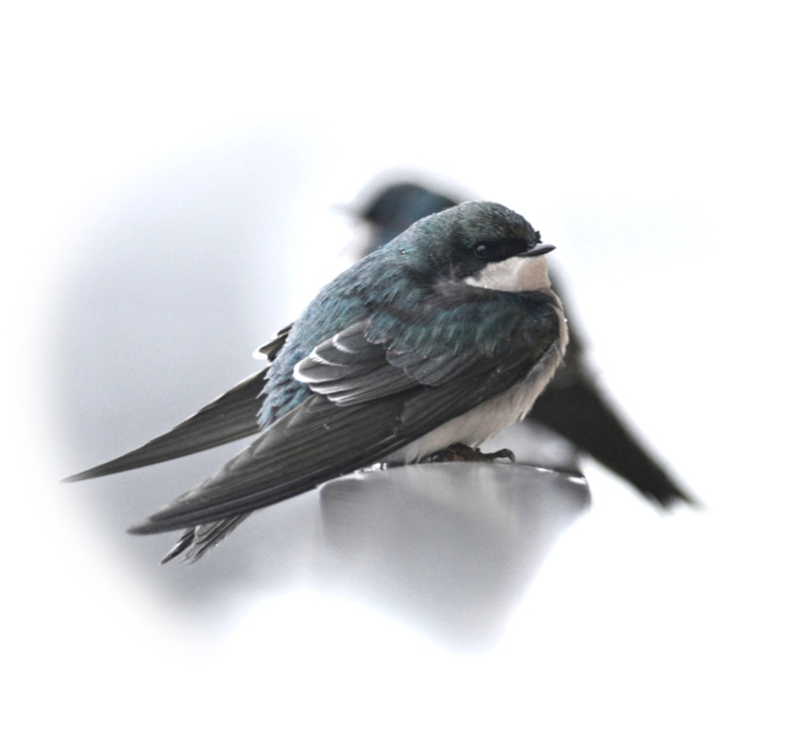
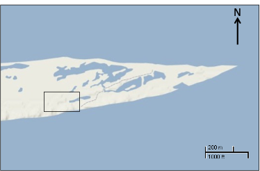
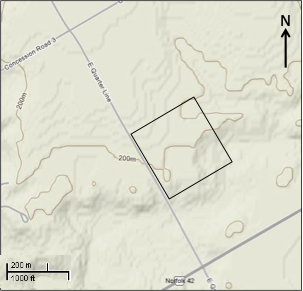
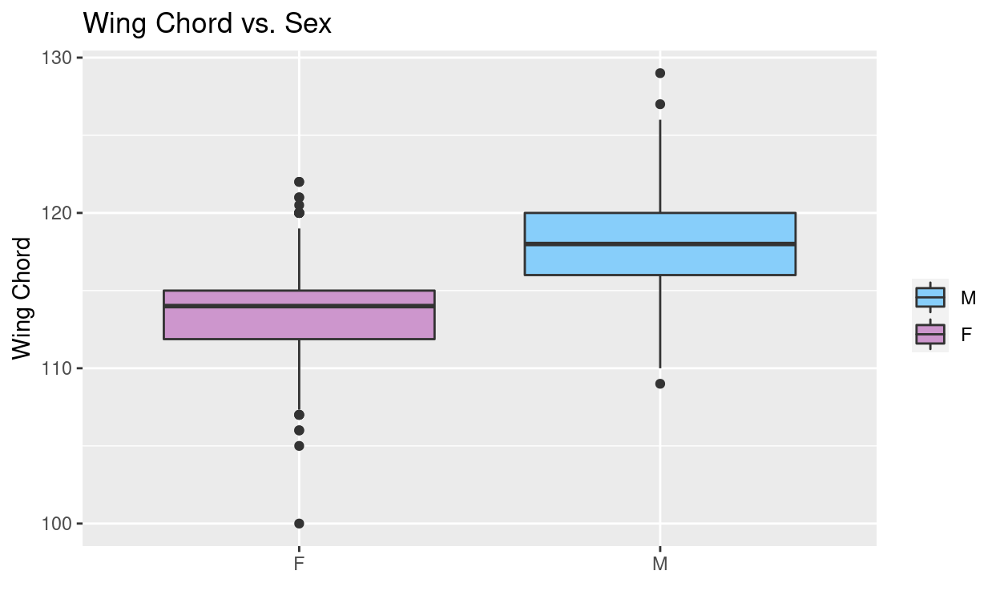

Tutorial learning objectives
In this tutorial you will explore:
- Whether sexual dimorphism is present in a population of Tree Swallows found in Long Point, Ontario
- Life history traits of Tree Swallow
- Trade offs between the number of clutches a bird may have and the number of eggs in each clutch
- How the sampled population of Tree Swallow’s birth rates have changed over time
Background of datasets
This is a tutorial to get you familiar with R and explore ecological concepts through a Tree Swallow nest productivity dataset. Before we jump into the weeds, let’s get to know our dataset!
The Tree Swallow (Tachycineta bicolor) is one of the most common birds in eastern North America that normally nests in tree cavities excavated by other species like woodpeckers, but also readily accepts human made nest’ boxes. Based on this quality and their abundance, Birds Canada has monitored nest boxes of tree swallows around the Long Point Biosphere Reserve, Ontario, from 1974 to 2014. Each year, May through June, volunteer research assistants check nest box contents daily, and band the adults and their young. Nest-box records are available from about 300 boxes from 3-4 sites during this period. Data collected includes nest box observations, clutch initiation dates, clutch size and egg weight, nest success, weather, insect abundance, and banding data. This data set includes all data entry related to eggs, nests, nestlings, nest check observations, and banding data from 1977 to 2014. More information on this dataset can be found here.
Additionally, in 2021, this dataset was quality checked and made open access by Jonathan Diamond through a Data Rescue internship with the Living Data Project, an initiative through the Canadian Institute of Ecology and Evolution that rescues legacy datasets.

Through Bird Studies Canada, Long Point Bird Observatory monitored three nest box “colonies” of Tree Swallows at Long Point, two on the “mainland” near Port Rowan (at the Port Rowan sewagelagoons and adjacent to agricultural land at mudd creek) and the third at the tip of the Point.
The Point
This colony was established in its present location in 1969. The nest boxes are located about 1 km west of the Tip of the point and are arranged 24.4m apart in a grid of numbered (north-south) rows and lettered (east-west) columns. Each box is designated by its position, so box 10G is in row 10 and column G. At the present time the rows in use are 1-19 and the letters are D-K, but many positions are unfilled and there are a total of 64 boxes.

The Sewage Lagoon
This colony was first established in 1977 and has since been expanded to a total of 77 boxes. The boxes are in two rows around the lagoon embankment, as well as across the street in a small cluster of 5 boxes.

Mud Creek
Established in 1987, the Mud Creek site is located 3.25 km north-northeast of Sewage Lagoon and contains 80 nest boxes. The habitat is an open, uncultivated field adjacent to a small woodlot.

For this tutorial we will be looking at the banding dataset which adults were trapped sometime between the first young hatch and when they were 12 days old. All adult birds are banded, unless previously banded. It was also recorded if the bird had a brood patch (BP) or cloacal protuberance (CP). Plumage color was recorded as blue (BLU), Brown (BRN), or Intermediate (INT). Furthermore, plumage categories and age/sex designations were assigned and a variety of size measurements were taken:
Plumage Categories
- BLU birds (ASY) More than 90% of the upper parts iridescent blue-green
- INT birds (AHY) More than 50% up to 90% of upper parts iridescent blue-green (remainder dull brown or brown tinged with green)
- BRN birds (SY) Up to 50% of upper parts iridescent blue-green (remainder > 50% dull brown or brown tinged with green)
Sex Categories
- Male = M
- Female = F
Measurements of Size and Weight
- Wing chord length (mm) = wing_chord
- Wing chord flat (mm) = wing_flat
- Tail length (mm) = tail
- p_9 = primary feather length

Adults are blue-green above with white below with blacking flight feathers. Photo courtesy of Max Nootbaar from the Macaulay Library.

First year females may be brownish above with hints of blue-green; adult females can be nearly blue-green as males. Photo courtesy of Matt Davis from the Macaulay Library
Importing data and packages
In this tutorial, we will be working with Tree Swallow data collected by Bird Studies Canada, Long Point Bird Observatory as well as a few additional packages. Run the following code to import the required packages and pull in the dataset that we will be working with throughout this tutorial.# Now, we want to make sure the class of our data is correct before we move forward:
str(banding)
'data.frame': 1602 obs. of 13 variables:
$ band_or_recapture: chr "R" "R" "R" "R" ...
$ band_number : num 1831 1881 2171 1881 2351 ...
$ sex : chr "F" "F" "F" "M" ...
$ colour : chr "BLU" "BLU" "BLU" "BLU" ...
$ wing_chord : num 116 115 112 123 118 123 110 111 112 117 ...
$ wing_flat : num 119 119 114 124 119 125 112 113 114 118 ...
$ tail : num 58 54 55 60 58 56 55 52 55 54 ...
$ p_9 : int 89 90 88 96 92 97 89 87 90 92 ...
$ weight : num 22 19.6 21.5 21.1 22.1 20.5 20 21.6 19.8 20.5 ...
$ date : chr "2010-06-01" "2010-06-01" "2010-06-01" "2010-06-01" ...
$ nest_box : chr "PT4G" "PT2F" "PT15G" "PT4G" ...
$ age_code : chr "ASY" "ASY" "ASY" "AHY" ...
$ year : int 2010 2010 2010 2010 2010 2010 2010 2010 2010 2010 ...# lets go ahead and convert the sex and nest_box column class into factors:
banding$sex <- as.factor(banding$sex)
banding$nest_box <- as.factor(banding$nest_box)
str(banding_nest)
'data.frame': 1002 obs. of 16 variables:
$ band_number : num 1671 1672 1672 1771 1771 ...
$ year : int 2010 2010 2010 2010 2010 2011 2011 2012 2010 2011 ...
$ sex : chr "M" "F" "F" "F" ...
$ colour : chr "BLU" "BLU" "BLU" "BLU" ...
$ wing_chord : num 116 120 118 120 116 115 114 109 112 115 ...
$ wing_flat : num 117 121 119 121 118 117 116 111 114 119 ...
$ tail : num 55 47 53 52 54 55 58 60 46 56 ...
$ p_9 : int 89 92 93 95 91 95 88 88 92 91 ...
$ weight : num 20 22.5 23.8 19.7 19.5 ...
$ date : chr "2015-06-01" "2015-06-01" "2017-06-01" "2017-06-01" ...
$ nest_box : chr "PT16I" "PT16I" "PT19F" "PT09F" ...
$ clutch_size : int 6 6 5 6 4 3 6 6 4 5 ...
$ clutch_number : int 1 1 1 1 1 1 1 1 1 1 ...
$ no_of_young_fledged: int 6 6 4 4 4 1 4 6 4 5 ...
$ number_hatch : int 6 6 4 4 4 2 6 6 4 5 ...
$ location : chr "PT" "PT" "PT" "PT" ...# fix class
banding_nest$sex <- as.factor(banding_nest$sex)
banding_nest$nest_box <- as.factor(banding_nest$nest_box)
banding_nest$location <- as.factor(banding_nest$location)
str(banding_nest)
'data.frame': 1002 obs. of 16 variables:
$ band_number : num 1671 1672 1672 1771 1771 ...
$ year : int 2010 2010 2010 2010 2010 2011 2011 2012 2010 2011 ...
$ sex : Factor w/ 2 levels "F","M": 2 1 1 1 1 1 1 1 1 1 ...
$ colour : chr "BLU" "BLU" "BLU" "BLU" ...
$ wing_chord : num 116 120 118 120 116 115 114 109 112 115 ...
$ wing_flat : num 117 121 119 121 118 117 116 111 114 119 ...
$ tail : num 55 47 53 52 54 55 58 60 46 56 ...
$ p_9 : int 89 92 93 95 91 95 88 88 92 91 ...
$ weight : num 20 22.5 23.8 19.7 19.5 ...
$ date : chr "2015-06-01" "2015-06-01" "2017-06-01" "2017-06-01" ...
$ nest_box : Factor w/ 218 levels "MC01","MC02",..: 134 134 142 99 214 214 143 202 33 26 ...
$ clutch_size : int 6 6 5 6 4 3 6 6 4 5 ...
$ clutch_number : int 1 1 1 1 1 1 1 1 1 1 ...
$ no_of_young_fledged: int 6 6 4 4 4 1 4 6 4 5 ...
$ number_hatch : int 6 6 4 4 4 2 6 6 4 5 ...
$ location : Factor w/ 3 levels "MC","PT","SL": 2 2 2 2 3 3 3 3 1 1 ...Sexual dimorphism in tree swallows
Sexual dimorphism is defined as the phenotypic variations within different sexes of the same species (Andersson 1994). Differences can include size, weight, plumage (in birds). These differences are thought to arise through species that are part of a social mating system, in which there may be varying degrees of parental care (Darwin 1871; Wallace 1889; Anderson 1994). This phenomenon is often seen in birds, where males are the larger sex and have more ornate plummage than females.
[]!(TRES/ornate.png)
Image from ThoughtCo..
Question
- Why do you think this phenomenon happens?
- Why are females generally more drab?
- In which instance to you think females would be more ornate than males?
Answer:
To determine if sexual dimorphism exists in this tree swallow data were will get you to explore the average size measurements taken for each bird. Since birds were tracked using a band number, and birds may have been captured multiple times throughout their life, so we will observe the differences in average size measurement taken for each bird.
# look at the following variable to see how they differ by gender : wing_chord, tail, and weight
# will will take the mean of these measurements by band_number and gender
wing_chord_grouped <- aggregate(wing_chord ~ band_number + sex, banding, mean)
# Boxplot of these trends based on sex
ggplot(wing_chord_grouped, aes(factor(sex), wing_chord, fill=sex)) +
geom_boxplot() +
scale_fill_manual("", values=c("M"= "lightskyblue", "F"= "plum3")) +
xlab('') +
ylab('Wing Chord') +
ggtitle("Wing Chord vs. Sex")

Try coding
Lets go ahead and try calculating the mean tail length when grouped by sex and band number and graph boxplots of these values. Lets call the grouped tail values ‘tail_grouped’ and grouped weight values ‘weight_grouped’. Hint: think look at how we calculated these values for wing_chord.
Now, to get a sense of how much the wind chord length, tail length, and weight differs between male and female tree swallows lets find the mean values of both the males and females.
# We can calculate the mean female and male wing chord length by grouping the wing chord values by sex and finding the mean like this:
aggregate(wing_chord ~ sex, wing_chord_grouped, mean)
sex wing_chord
1 F 113.5396
2 M 117.9625# see how we are using the dataframe 'wing_chord_grouped' that we aggregated previously where we had already grouped our birds by band number and sex?
Try coding
Try calculating the mean female and male tail length and weight values on your own.
Questions
What is the average wing chord length, tail length, and weight of the male tree swallows?
What is the average wing chord length, tail length, and weight of the female tree swallows?
Do these findings suggest that there is some level of sexual dimorphism in tree swallows?
What type of pressures could lead to sexual dimorphism in tree swallows?
Answer:
Aspects of Tree Swallow Life History
Trade offs: Clutch size vs. clutch number?
# To visualize whether there may be a trade off between clutch size and the number of clutches in a nest lets visualize these factors in a box plot. The nest dataset contains records of the clutch numbers found in nest boxes across Long Point dating back to 1987!
# lets take a quick look at the dataset first to figure out what we need to plot
head(nest)
year nest_box clutch_number location nest_code clutch_size
1 1987 MC02 2 MC MC1987M02 3
2 1987 MC03 1 MC MC1987M03 5
3 1987 MC04 1 MC MC1987M04 4
4 1987 MC07 1 MC MC1987M07 5
5 1987 MC08 1 MC MC1987M08 6
6 1987 MC10 1 MC MC1987M10 5# we want to look at how clutch size (clutch_size) may vary between the first and second clutch (clutch_number). Lets check these out using the plotting function ggplot
ggplot(nest, aes(factor(clutch_number), clutch_size)) +
geom_boxplot(outlier.colour="black", outlier.size=0.5, position = position_dodge(preserve = "single")) +
xlab('Clutch Number') +
ylab('Clutch Size') +
ggtitle("Clutch Number vs. Clutch Size") +
scale_y_continuous(breaks = seq(0, 13, by = 1)) +
theme(plot.title = element_text(hjust = 0.5))

# What is the mean clutch size for the first and second clutch in a nest? This is how we would calculate the average clutch size for clutch number 1 and 2. See how we are finding the mean clutch size by the clutch number, pulling these values from the nest data set?
aggregate(clutch_size ~ clutch_number, nest, mean )
clutch_number clutch_size
1 1 5.613377
2 2 4.796196Question
What is the average clutch size for the first and second clutches?
Answer:
It appears that second clutches are slightly smaller than first clutches! However, in order to confirm that there is a statistically significant difference between the two clutch sizes you would need to complete some sort of statistical analysis (e.g a t-test).
Do larger birds have bigger clutches?
Is the size and weight of the bird at maturity related to the clutch size? Lets look at wing chord length, tail length, and bird weight to investigate this. Also, lets make sure we look at male and female birds separately.
# First, lets find the mean wing chord length when grouped by year, nest_box, sex, clutch_number, clutch_size and band number. This will help us deal with any repeated measurements taken of the same bird visiting the the same nest box multiple times in a season.
# Here is how we find the mean wing chord length, we will store these calculation in the dataframe 'banding_nest.wing_chord'
banding_nest.wing_chord <- aggregate(wing_chord ~ year + sex + nest_box + clutch_number + band_number + clutch_size, banding_nest, mean)
# Here is how we find the mean tail length, we will store these calculation in the dataframe 'banding_nest.tail'
banding_nest.tail <- aggregate(tail ~ year + sex + nest_box + clutch_number + band_number + clutch_size, banding_nest, mean)
# Here is how we find the mean weight, we will store these calculation in the dataframe 'banding_nest.weight'
banding_nest.weight <- aggregate(weight ~ year + sex + nest_box + clutch_number + band_number + clutch_size, banding_nest, mean)
# lets see if we see any patterns between the number of eggs there are per clutch (clutch_size) and the weight or size of the parent tree swallow
plot(clutch_size ~ wing_chord, banding_nest.wing_chord,
main="Clutch Size vs Parent Wing Chord Length",
pch=20,
col=sex,
xlab="Wing Chord Length (mm)",
ylab="Clutch Size")
legend("topright", legend= levels(banding_nest.wing_chord$sex), # this adds a legend to out plots to tell us
col= 1:2, pch = 20, cex=0.9)

plot(clutch_size ~ tail, banding_nest.tail,
main="Clutch Size vs Parent Tail Length",
pch=20,
col=sex,
xlab="Tail Length (mm)",
ylab="Clutch Size")
legend("topright", legend= levels(banding_nest.tail$sex),
col= 1:2, pch = 20, cex=0.9)

plot(clutch_size ~ weight,banding_nest.weight,
main="Clutch size vs Parent Bird Weight",
pch=20,
col=sex,
xlab="Weight (g)",
ylab="Clutch Size")
legend("topright", legend= levels(banding_nest.weight$sex),
col= 1:2, pch = 20, cex=0.9)

Question
Do you notice any relationships between bird size and clutch size?
Answer:
Changes through time
Lastly, lets investigate if the average clutch size over time is changing. Could bird birth rates be changing over time as a result of climate change or other environmental shifts?
# first we want to take the average clutch size that was sampled from all of the nest boxes each year
nest.average <- aggregate(clutch_size ~ year, nest, mean)
# next, we will graph these values and add a linear regression with the associated R-squared value to see if there is evidence of a trend!
lm_clutch_size <- summary(lm(clutch_size ~ year, data= nest.average)) # this line helps helps us calculate linear regressions
r2_0 <- lm_clutch_size$r.squared # this line helps us make R-squared labels
rlabel_0 <- bquote(italic(R)^2 == .(format(r2_0, digits = 3))) # this line helps us make R-squared labels
plot(clutch_size ~ year, data=nest.average,
main="Yearly Average Clutch Size over Time",
pch=16,
xlab="Year",
ylab="Yearly Average Clutch Size",
cex.main=1.25,
cex.lab=1)
abline(lm(clutch_size ~ year, data=nest.average)) # this line adds our linear regression to the plot
text(2010, 6.2, rlabel_0) # this line adds our R-squared labels to the plot

Question
Do you notice any relationships between clutch size and year?
Answer:
Take-homes
After going through these data you have now had the opportunity to learn a bit about tree swallows, and more specifically look at a ‘community’ of tree swallows found in Long Point, ON. This population appeared to show signs of sexual dimorphism, where the male swallows had longer wing chords and tails and were heavier. As well, we noticed that there appeared t be a trade off between clutch size and the number of clutched in a nest. An important thing to not is that these relationships were speculative and statistical analyses will be required to support these findings in this population.
Lastly, these data did not show trends of larger birds having more eggs and we observed no conclusive temporal trends of changes in birth rates over time. It is not uncommon that data is collected with certain hypotheses in mind and trend or relationships are ultimately not found to support these hypotheses!